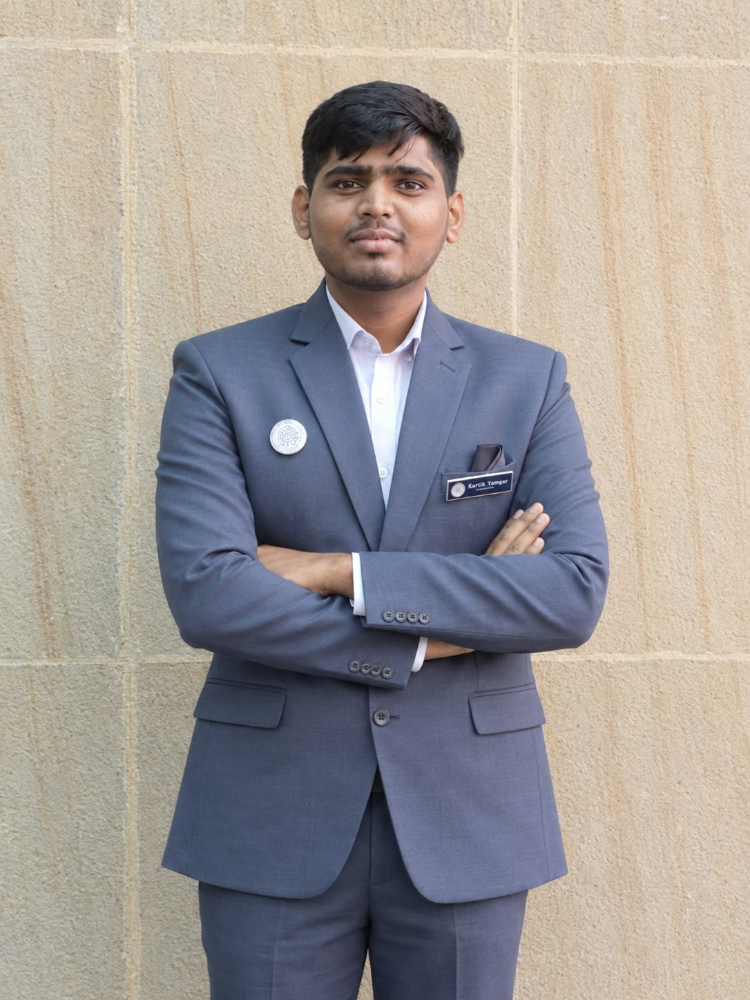

COMPUTER ENGINEERING · AI & ML
Building ideas
into intelligent
experiences.
I'm Kartik Yamgar — an AI & ML student and aspiring software developer who enjoys turning practical problems into useful digital solutions.

AI & MLCuriosity → Creation
Build. Learn. Improve.One project at a time
PORTFOLIO / 2026
01 / ABOUT ME
Curious mind.
Practical builder.
I'm pursuing a Bachelor of Engineering in Computer Science Engineering, specializing in Artificial Intelligence and Machine Learning at Saraswati College of Engineering. I enjoy exploring technology, developing applications, and collaborating with teams to solve problems.
My experience includes an international Summer University Program at Ural Federal University in Russia, where I worked with international teams on technical coursework and project-based activities.
8.02Aggregate CGPA
2027Expected graduation
3Featured projects
02 / TOOLKIT
Skills & technologies
Tools and foundations I use to learn, build, and solve problems.
Web development
Database
Tools & concepts
03 / SELECTED WORK
Projects with purpose.
Academic and practical projects focused on useful digital experiences.
resume-analysis.ai
AIRESUME INSIGHTS
AI Resume Analyzer
Analyzes résumés against job descriptions, identifies skill gaps, and offers career recommendations.
SEVA.Connect☰
Find help. Get things done.
🔧
Home servicesBook a trusted professional
→🗓
AppointmentsManage your bookings
→SEVA.Connect
An online service management platform for appointment scheduling, users, bookings, and service providers.
A C.ARTISTICUTZ STUDIO
YOUR STYLE.
YOUR MOMENT.
BOOK AN APPOINTMENT ↗
ArtistiCutz
A salon appointment booking system built with HTML, CSS, JavaScript, and MySQL.
Project visuals are illustrative previews. Repository and live-demo links can be added when available.
04 / EXPERIENCE
A global learning experience.
JUL 06 — 19, 2026
SUMMER UNIVERSITY PROGRAM · RUSSIA
Summer Intern — IT & Artificial Intelligence
Ural Federal University
Participated in an international program covering IT, Artificial Intelligence, coding, and practical problem-solving. Collaborated with international teams on technical coursework and project-based activities.
↗
05 / EDUCATION
The learning journey.
2023 — 2027
IN PROGRESS
Bachelor of Engineering
Computer Science Engineering — AI & ML
Saraswati College of Engineering
Aggregate CGPA: 8.02 · Expected 20272023
Higher Secondary Certificate (HSC)
B.N. Bandodkar College
2021
Secondary School Certificate (SSC)
St. Xavier's High School
Discipline Captain06 / CREDENTIALS & LEADERSHIP
Beyond the classroom.
Certifications
Information Technologies & Artificial Intelligence
Ural Federal University, Russia · 2026
HackAtom — Project Work
Ural Federal University, Russia · 2026
Leadership & activities
President, AISA Association
Former Secretary. Led student teams, coordinated department initiatives, delegated responsibilities, and executed events.
Joint Photography Head
Coordinated the department photography team and managed media coverage for college events.
07 / LET'S CONNECT
Have a good idea?
Let's make it happen.
I'm always interested in connecting with people, learning new things, and exploring meaningful opportunities.
KARTIKYAMGAR0928@GMAIL.COM